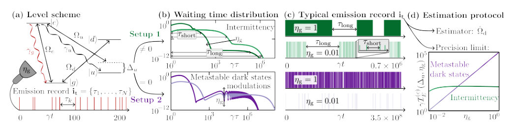
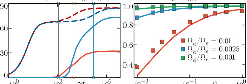

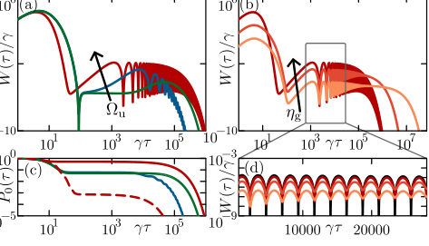
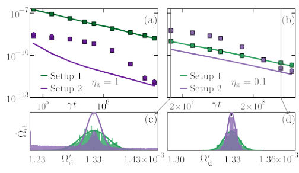
Highlighted author(s): Igor Lesanovsky
Authors: Robert Mattes, Igor Lesanovsky, Albert Cabot
Type: theory · Category: other · PDF: https://arxiv.org/pdf/2605.26923v1
Analysis basis: full PDF text, analyzed in chunks
Topic relevance: 🔥 quantum measurements 4/5 · methods for driven-dissipative 2/5




Summary. This paper compares two types of quantum emission dynamics—intermittency and metastable dark states—as resources for continuous parameter sensing. It reveals that while dark states offer superior sensitivity in ideal conditions, intermittent 'blinking' dynamics are far more resilient to the detection losses and dephasing common in real-world experiments.
Why it may be interesting. It provides a critical trade-off analysis between high-sensitivity/high-fragility (dark states) and low-sensitivity/high-robustness (intermittency) regimes, which is essential for designing practical continuous-monitoring quantum sensors.
Main problem. Evaluating how different emission dynamics, specifically intermittency (blinking) and metastable dark states, impact the sensitivity of continuous quantum sensing under detection inefficiency and dephasing.
Main result. Metastable dark states provide much higher sensitivity at unit detection efficiency but are highly sensitive to losses, whereas intermittent emission is less sensitive but much more robust to low detection efficiency and dephasing.
Method. The study uses the Lindblad master equation, classical and quantum Fisher information (FI and QFI) to quantify sensitivity, and Maximum-Likelihood Estimators (MLE) to evaluate parameter estimation performance.
Model / system. A four-level driven-dissipative system (applicable to trapped ions like Sr+ and Ca+) featuring a strong fluorescent transition and a weak metastable transition, modeled via a Lindblad master equation.
Key observables. Photon-counting records, waiting time distributions (WTD), and the no-jump probability.
Important parameters / regimes. Detection efficiency (eta_g), Rabi frequencies (Omega_e, Omega_d, Omega_u), detuning (Delta_u), and dephasing rate (gamma_D).
Assumptions / limitations. The system is treated as a renewal process where every detected jump returns the system to the ground state; the analysis focuses on the asymptotic regime of long observation times.
Figures summary. Figure 1 shows the level scheme and WTD for different setups; Figure 2 compares WTD parameters and stationary populations; Figure 3 and 4 analyze FI rates and WTD oscillations; Figure 12 shows the damping of WTD modulations due to dephasing.
Paper structure. The paper introduces the sensing problem and two dynamical setups, analyzes the waiting time distributions and sensitivity (FI/QFI) for both regimes, evaluates the impact of experimental imperfections like detection loss and dephasing, and demonstrates the optimality of MLE-based estimation.
Quanta emitted by an open quantum system carry information about intrinsic parameters, enabling their estimation via continuous monitoring. In practice, however, only a fraction of the emitted quanta is detected, reducing the achievable sensitivity. Here, we consider few-level systems in which coherent couplings and dissipative processes compete, producing metastable dynamics characterized by emission intermittency or by the emergence of a dark state. We show that both phenomena can be beneficial for sensing but their relative performance depends strongly on the achievable detection efficiencies. Intermittent emission, marked by long alternating bright and dark periods, allows to achieve robustness with respect to inefficient detection and dephasing, whereas dark states yield significantly higher sensitivity at unit detection efficiency. Yet the latter are highly susceptible to losses. We quantify the impact of inefficient detection through the classical Fisher information of the emission record and benchmark it against the ultimate sensitivity encoded in the joint system-environment state. Finally, we demonstrate that maximum-likelihood estimators based on the observed emission record can effectively approach this sensitivity. We focus here on trapped-ion systems, however, the results extend to other quantum platforms in which similar emission dynamics can be observed.
Authors: Aleksandra A. Ziolkowska, Aleksandr N. Mikheev
Type: theory · Category: statistical mechanics · PDF: https://arxiv.org/pdf/2605.27199v1
Analysis basis: full PDF text, analyzed in chunks
Topic relevance: 🔥 Keldysh / 2PI / non-Gaussian methods 5/5 · 🔥 methods for driven-dissipative 4/5 · 🔥 non-equilibrium dynamics 4/5 · Tavis-Cummings & cavity-many-emitter 3/5 · correlated cavity matter 3/5 · exotic spin models in light-matter 3/5 · Dicke superradiance 2/5 · analog quantum simulation 2/5 · correlated / nonlocal dissipation 2/5 · driven-dissipative phase transition 2/5 · entanglement & information structure 2/5 · non-equilibrium universality 2/5 · scars & prethermalization 2/5
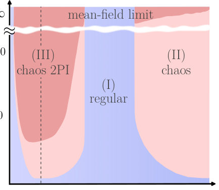
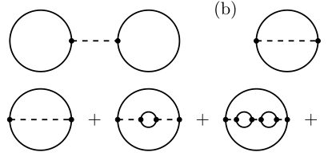
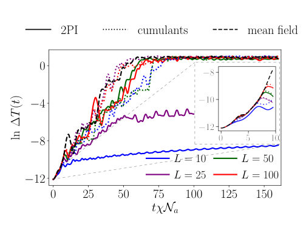
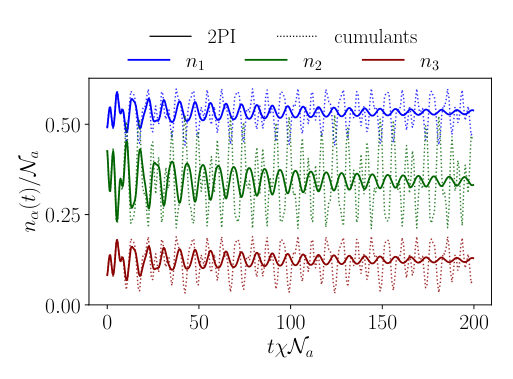
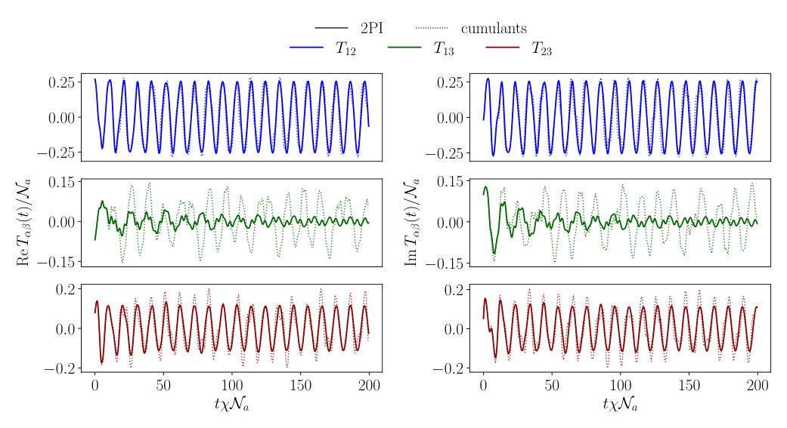
Summary. This paper demonstrates that quantum fluctuations can regularize chaotic dynamics in a fully connected SU(3) spin model. By using the 2PI effective action formalism, the authors show that higher-order correlations are essential to capture the relaxation and smoothing of chaotic trajectories that standard mean-field or cumulant methods fail to describe.
Why it may be interesting. It provides a robust theoretical framework (2PI) for understanding how quantum effects can suppress classical chaos, which is crucial for controlling many-body dynamics in platforms like cavity-QED and trapped ions.
Main problem. Investigating how quantum fluctuations regularize chaotic dynamics in the macroscopic observables of many-body systems and addressing the failure of standard cumulant expansions in strong-correlation regimes.
Main result. The 2PI effective action formalism successfully captures the regularization of chaos and relaxation processes that are missed by second-order cumulant expansions, which instead predict unphysical persistent oscillations.
Method. The authors use the 2PI effective action formalism within the Schwinger-Keldysh framework, employing a 1/L expansion and Hubbard-Stratonovich transformation to derive self-consistent nonequilibrium Dyson equations.
Model / system. A fully connected SU(3) spin-exchange model, which serves as an effective description for N-level systems coupled to a common bosonic mediator, such as in cavity-QED or trapped-ion systems.
Key observables. Macroscopic collective spins, two-time correlation functions, bosonic level populations, and the Frobenius norm of trajectory divergence (to diagnose chaos).
Important parameters / regimes. Interaction strengths (g+, g-), magnetic field (h), system size (L), and the inverse system size (1/L) acting as an effective Planck constant.
Assumptions / limitations. The system is assumed to be homogeneous and the study focuses on U(1)-symmetric states; the 1/L correction due to operator-ordering subtleties is assumed to be negligible.
Figures summary. Figure 1 shows a dynamical phase diagram of regular vs. chaotic regimes; Figure 2 and 3 present diagrammatic notation for the 2PI formalism; Figure 4 shows the divergence of trajectories (Lyapunov-like growth); Figure 6 compares the relaxation of coherences in 2PI vs. cumulant expansion.
Paper structure. The paper introduces the SU(3) model and the problem of chaos regularization, details the 2PI and cumulant methodologies, presents numerical results comparing relaxation and chaos suppression, and concludes with a discussion on the superiority of the 2PI framework.
We investigate beyond-mean-field dynamics in a fully connected $\mathrm{SU}(3)$ spin-exchange model, focusing on the interplay between chaotic dynamics and quantum fluctuations. Using the two-particle irreducible (2PI) effective action formalism, we derive equations of motion that systematically account for higher-order correlations generated by interactions, and demonstrate how quantum fluctuations can regularize chaotic dynamics displayed by macroscopic observables. Our results show that an accurate treatment of fluctuations is essential for describing macroscopic dynamics in quantum many-body systems and promote 2PI as a robust framework for connecting microscopic correlations to macroscopic nonequilibrium phenomena.
Authors: K. G. S. H. Gunawardana, Ali G. Moghaddam, Teemu Ojanen
Type: theory · Category: statistical mechanics · PDF: https://arxiv.org/pdf/2605.27350v1
Analysis basis: full PDF text, analyzed in chunks
Topic relevance: 🔥 measurement-induced transitions 5/5 · 🔥 driven-dissipative phase transition 4/5 · 🔥 entanglement & information structure 4/5 · 🔥 non-equilibrium dynamics 4/5 · methods for driven-dissipative 3/5 · non-equilibrium universality 3/5 · quantum measurements 3/5
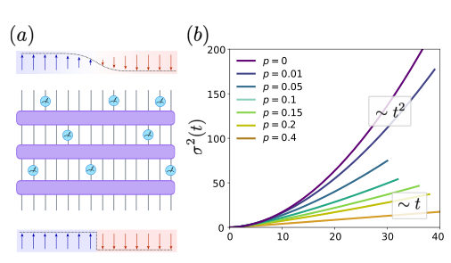
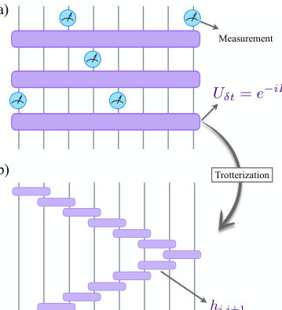
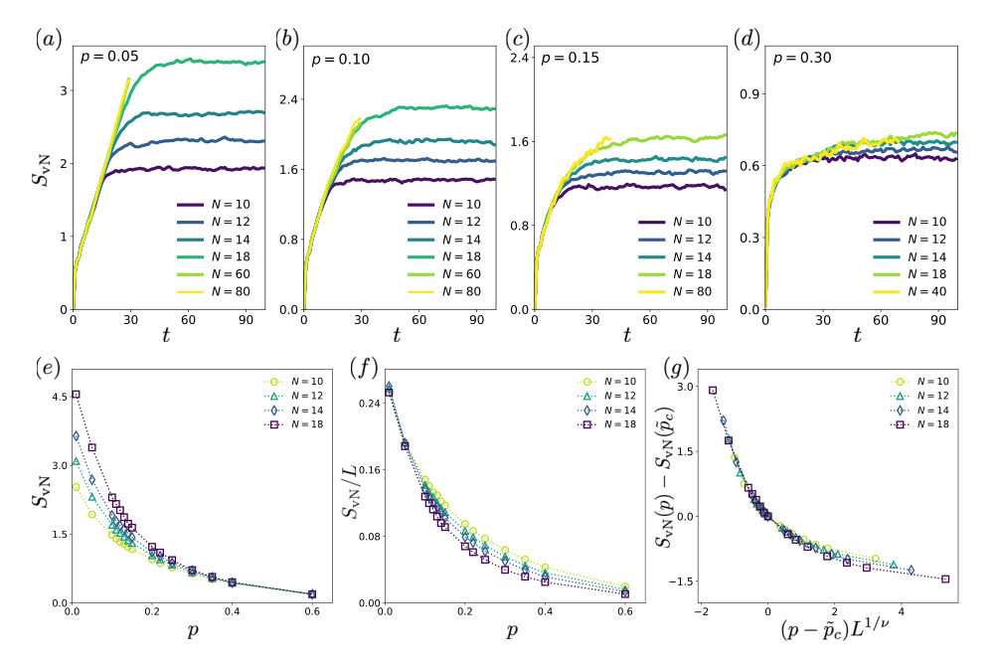
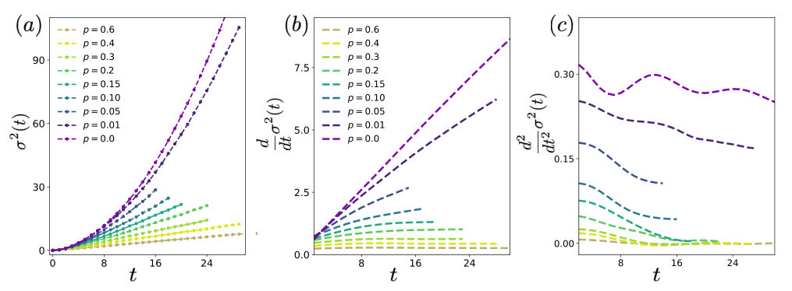
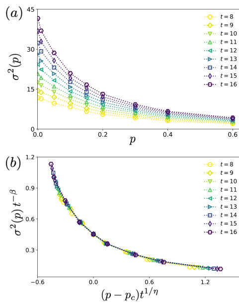
Summary. This paper demonstrates that monitoring a spin chain induces both an entanglement phase transition and a transition from ballistic to diffusive transport. Crucially, the transport transition can be observed through linear observables without the need for the complex postselection required for entanglement entropy. This provides a practical pathway for studying measurement-induced phenomena in quantum simulators.
Why it may be interesting. It identifies a way to observe measurement-induced phase transitions using linear, postselection-free observables, providing an experimentally accessible manifestation of the many-body Zeno effect.
Main problem. Investigating the connection between measurement-induced entanglement phase transitions and transitions in transport dynamics (ballistic-to-diffusive) in monitored spin chains.
Main result. The study discovers a postselection-free ballistic-to-diffusive transition in the transient dynamics of spin chains that is closely interlinked with the steady-state entanglement phase transition.
Method. Numerical simulations using Matrix Product State (MPS) methods with the ITensorMPS package, involving trajectory averaging and single-parameter scaling analysis.
Model / system. One-dimensional spin-1/2 XXZ chains in the gapless regime subject to periodic monitoring (measurements) in the high-frequency regime.
Key observables. Von Neumann entanglement entropy, domain-wall width (spatial variance of magnetization), and local magnetization density.
Important parameters / regimes. Measurement rate (p), anisotropy parameter (Delta), and system size (L).
Assumptions / limitations. The unmonitored limit derivation assumes the light cone remains far from system boundaries; the high-frequency monitoring is treated in the discrete-time limit.
Figures summary. Figure 1 shows the domain wall melting process; Figure 2 illustrates the Trotter-decomposed dynamics; Figure 3 displays entanglement entropy growth and transitions; Figure 4 shows the evolution of the spatial variance and its derivatives; Figure 5 presents the scaling analysis.
Paper structure. The paper introduces the problem of measurement-induced transitions, describes the XXZ model and monitoring protocol, presents numerical results for entanglement and transport dynamics, provides scaling analysis and theoretical arguments for the link between transitions, and concludes with experimental implications.
We study spin and entanglement dynamics in spin-1/2 XXZ chains under periodic monitoring and show that this system exhibits two measurement-induced phase transitions: a steady-state entanglement phase transition similar to those in monitored quantum circuits and a ballistic-to-diffusive transition in transient dynamics. Specifically, we discover that at low monitoring rate, an initial configuration containing a domain wall $|\uparrow\uparrow\uparrow\ldots \downarrow\downarrow\downarrow\ldots\rangle$ spreads ballistically while, at large monitoring rates, the domain melting is diffusive. Extensive numerical simulations, supported by theoretical arguments, indicate that the ballistic-diffusive transition is intimately interlinked with the entanglement phase transition. In contrast to the entanglement phase transitions, which require exponentially complex postselection, the ballistic-diffusive transition can be observed without postselection and constitutes an experimentally accessible manifestation of the many-body Zeno effect.
Authors: Ankit Gill, Anurag Sarkar
Type: theory · Category: statistical mechanics · PDF: https://arxiv.org/pdf/2605.26250v1
Analysis basis: full PDF text, analyzed in chunks
Topic relevance: 🔥 non-equilibrium dynamics 5/5 · 🔥 entanglement & information structure 4/5 · driven-dissipative phase transition 3/5 · non-equilibrium universality 3/5 · scars & prethermalization 3/5
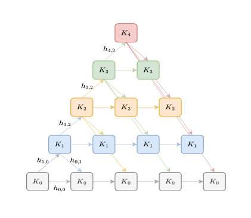
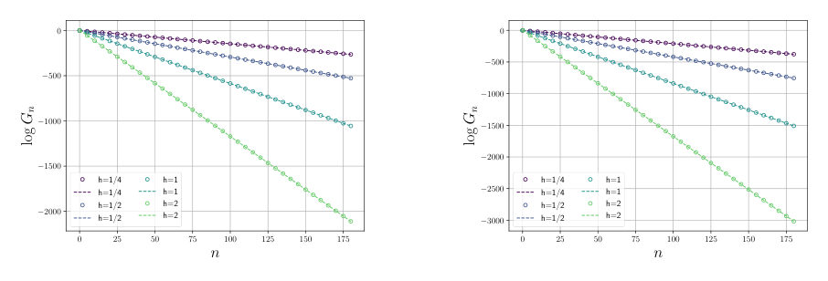
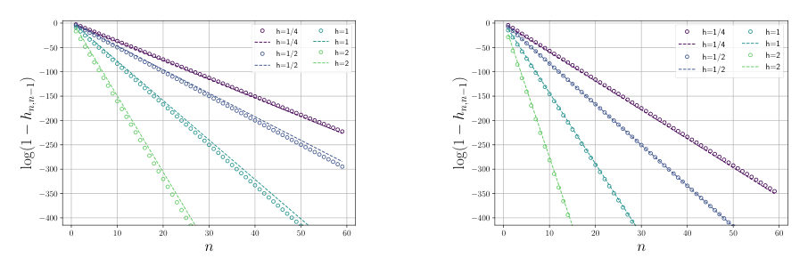
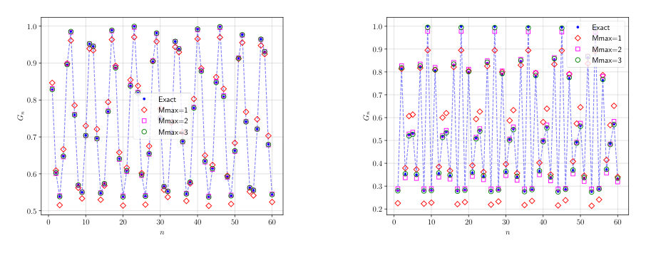
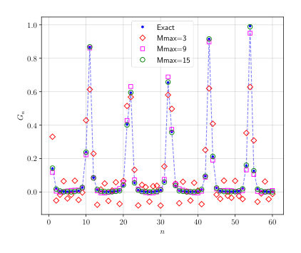
Summary. The paper investigates how Krylov complexity and operator growth behave in periodically driven conformal field theories and their lattice fermion counterparts. It identifies distinct signatures in the heating and non-heating phases and demonstrates that the type of driving protocol significantly impacts the spectral and graph-theoretic properties of the system.
Why it may be interesting. This paper is highly relevant for many-body dynamics as it provides a precise diagnostic (Krylov complexity) for distinguishing between thermalizing (heating) and non-thermalizing (non-heating) regimes in driven quantum systems.
Main problem. Characterizing the transition between heating and non-heating dynamical phases in periodically driven (Floquet) systems using Krylov complexity.
Main result. In the heating phase, Arnoldi coefficients approach unity exponentially, while in the non-heating phase, they exhibit oscillatory behavior; additionally, lattice realizations of continuous drives show different spectral and graph signatures compared to square-wave drives.
Method. The authors use the Arnoldi and Lanczos algorithms to construct Krylov bases, apply conformal mapping techniques for CFT analysis, and employ graph-theoretic analysis of the Floquet operator's transition matrix.
Model / system. The study focuses on (1+1)-dimensional Conformal Field Theories (CFTs) and their lattice realizations via 1D critical fermions under two driving protocols: a square-wave drive and a continuous sinusoidal drive.
Key observables. Krylov complexity (Ck), Arnoldi coefficients (h_{n, n-1}), return amplitude/autocorrelation (Gn), level-spacing ratio (r-factor), and Fiedler value.
Important parameters / regimes. Driving protocols (square-wave vs. continuous), heating vs. non-heating phases, and the driving strength parameter (delta_f).
Assumptions / limitations. The CFT analysis is restricted to the SL(2, R) sector and (1+1)-dimensional systems.
Figures summary. Figures include schematics of Krylov vector transitions, conformal mapping visualizations, driving protocol diagrams, and plots of Arnoldi coefficients, return probability, and graph connectivity/clustering.
Paper structure. The paper introduces the problem of Floquet dynamics, analyzes the CFT limit using analytical methods, compares this to lattice fermion simulations, explores different driving protocols (square-wave vs. continuous), and concludes with graph-theoretic and spectral analysis of the transition.
We study Krylov construction in periodically driven conformal field theories and their lattice realisations via critical fermions. Two types of driving are considered: a square-wave drive and a continuous sinusoidal drive. Using the Arnoldi construction, we examine Arnoldi coefficients and return amplitudes in periodically driven conformal field theories in the heating and non-heating phases. In the heating phase, the Arnoldi coefficients approach unity exponentially; in contrast, in the non-heating phase, they exhibit oscillatory behaviour. For the lattice realisations, we further analyse the Krylov complexity of the correlation matrix, quasi energy level statistics, and the graph structure induced by the Floquet operator. Although the two drives exhibit similar Krylov growth on the CFT side, their lattice realisations exhibit markedly different spectral and graph signatures, indicating distinct mechanisms governing the transition between the heating and non-heating phases.
Authors: Ning Sun, Yanting Cheng
Type: theory · Category: statistical mechanics · PDF: https://arxiv.org/pdf/2605.26389v1
Analysis basis: full PDF text, analyzed in chunks
Topic relevance: 🔥 scars & prethermalization 5/5 · 🔥 non-equilibrium dynamics 4/5 · Rydberg arrays 3/5 · entanglement & information structure 3/5
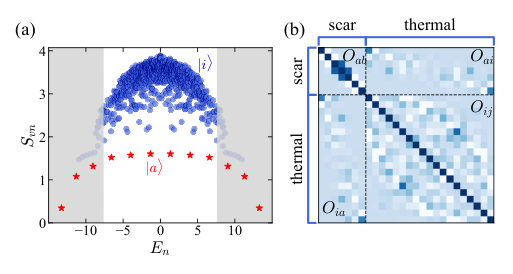
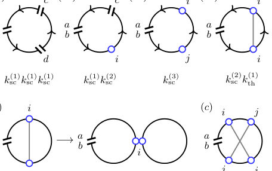
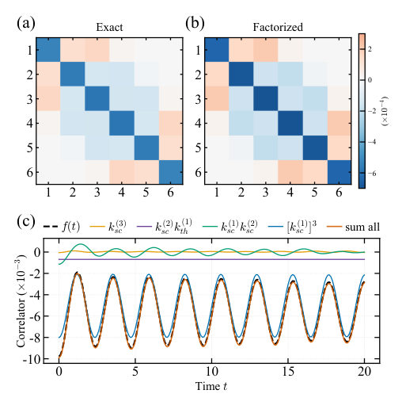
Summary. The paper introduces the Scar Full ETH (SFETH) to describe the dynamics of quantum many-body scars. It proves that multi-point correlation functions in these systems can be decomposed into fundamental thermal and scar-specific building blocks. This framework allows for a precise characterization of non-thermal correlations that traditional statistical mechanics cannot capture.
Why it may be interesting. It provides a systematic, unified framework for understanding how non-thermal, persistent dynamics and higher-order correlations emerge and organize in weakly ergodicity-breaking systems.
Main problem. The breakdown of the full Eigenstate Thermalization Hypothesis (ETH) in systems with quantum many-body scars, which prevents traditional ETH from describing non-thermal correlations.
Main result. The formulation of the 'scar full ETH' (SFETH) framework, which successfully decomposes multi-point correlation functions into thermal and scar free cumulants.
Method. Theoretical derivation using typicality arguments, Weingarten calculus, and free probability theory, with numerical validation via exact diagonalization of the PXP model.
Model / system. The spin-1/2 PXP model, a paradigmatic model for quantum many-body scars representing Rydberg atom arrays with blockade effects.
Key observables. Local observables (sigma-z), matrix elements in the energy eigenbasis, and multi-time/multi-point correlation functions.
Important parameters / regimes. Thermodynamic limit (N to infinity), energy density, and the scaling of contributions with the Hilbert space dimension (e^-S).
Assumptions / limitations. Thermal energy eigenstates behave as orthogonal Haar-random states, and the operator being measured is local.
Figures summary. Figure 1 shows entanglement entropy and matrix element sectors; Figure 2 illustrates the diagrammatic decomposition of correlation functions into scar and thermal cumulants; Figure 3 provides numerical verification of the SFETH sum rule using the PXP model.
Paper structure. The paper introduces the problem of ETH breakdown, proposes the SFETH ansatz, establishes scaling and factorization properties using mathematical tools, and concludes with numerical validation in the PXP model.
The eigenstate thermalization hypothesis (ETH) provides a fundamental mechanism for emergent statistical mechanics in isolated chaotic quantum systems, asserting that individual energy eigenstates behave as pseudorandom vectors within an energy window. This enables a complete characterization of nontrivial correlations among matrix elements in the energy eigenbasis, as described by the full ETH ansatz. Nevertheless, this description breaks down in systems exhibiting quantum many-body scars, which host non-thermal eigenstates with extensive energy. In this Letter, we address this problem by formulating the \textit{scar full ETH}, which captures correlations among matrix elements involving scar states. The corresponding scaling forms and factorization properties are established using typicality arguments. Multi-time correlation functions for scar states are then organized in terms of both thermal and scar cumulants, providing a nontrivial reorganization of higher-order correlations. We numerically demonstrate the validity of this framework in the paradigmatic model of quantum scars, the PXP model. Our results pave the way for a systematic understanding of intriguing correlations in systems with quantum many-body scars.
Authors: Andrea Bulgarelli, Marco Panero, Paolo Stornati, Luca Tagliacozzo
Type: theory · Category: numerical methods · PDF: https://arxiv.org/pdf/2605.26208v1
Analysis basis: full PDF text, analyzed in chunks
Topic relevance: 🔥 entanglement & information structure 5/5 · Rydberg arrays 3/5 · analog quantum simulation 3/5 · quantum measurements 2/5
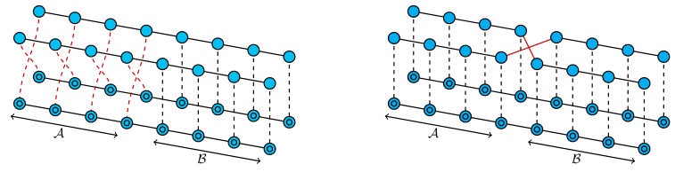
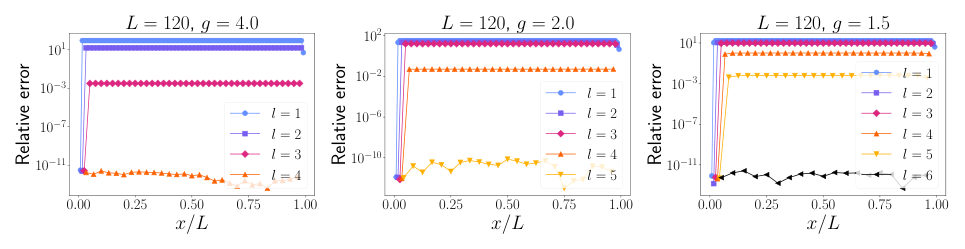
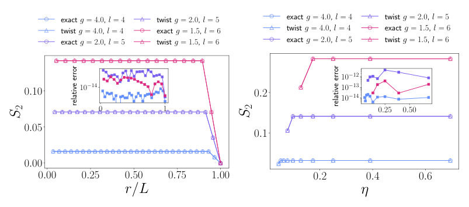
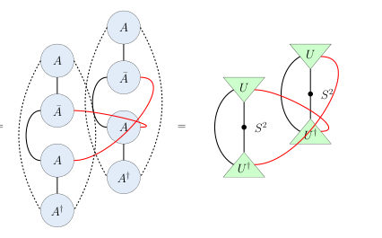
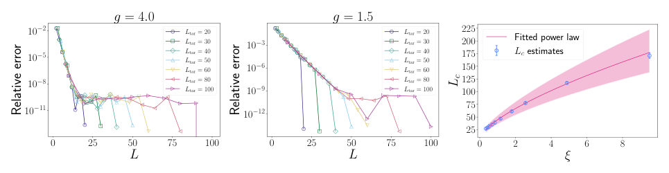
Summary. This paper develops a method to map non-local twist fields used in calculating Renyi entropies to local, physically accessible operators in tensor networks. By doing so, it enables the estimation of entanglement in quantum many-body systems using only local measurements. The approach is shown to be efficient, scalable, and transferable across different system sizes.
Why it may be interesting. This provides a direct bridge between abstract tensor network formalisms and practical measurements in quantum simulators like Rydberg atom arrays or trapped ions, enabling the measurement of complex entanglement properties using only local observables.
Main problem. The conventional twist field formalism for computing Renyi entropies in tensor networks relies on inaccessible virtual degrees of freedom, making it difficult to implement in physical experiments.
Main result. The authors construct explicit local physical operators that reproduce the action of twist fields in Matrix Product States, providing a scalable and experimentally accessible way to probe entanglement.
Method. The method uses the injectivity of MPS and the center of orthogonality to lift virtual swap operators to the physical Hilbert space via SVD and coarse-graining.
Model / system. The framework is applied to 1D Matrix Product States (MPS) and 2D Projected Entangled Pair States (PEPS), with numerical validation performed on the transverse-field Ising model.
Key observables. Renyi entropies (Sn), entanglement entropy, and expectation values of local Pauli strings.
Important parameters / regimes. Injectivity scale (l), correlation length (xi), bond dimension (chi), and central charge (c).
Assumptions / limitations. The construction is exact in the injectivity limit or at the center of orthogonality, and the accuracy of operator transferability depends on the reference system exceeding the correlation length.
Figures summary. Figure 1 illustrates the swap operator at virtual vs. physical levels; Figure 2 shows error decay in Renyi entropy estimates; Figure 3 displays twist field correlation functions; Figure 5 demonstrates the transferability of operators from small to large systems.
Paper structure. The paper introduces the problem of non-local twist fields, presents a construction for mapping them to local physical operators in 1D MPS, validates the method using the transverse-field Ising model, discusses the transferability of these operators across different system sizes, and proposes a generalization to 2D PEPS.
Twist fields are a powerful formal tool to compute Rényi entropies in quantum many-body systems, but their conventional formulation in tensor network states involves operations acting on virtual degrees of freedom, which are not directly accessible in experiments. In this work, we construct explicit local operators acting on the physical Hilbert space whose expectation values reproduce the action of twist fields in matrix product states. Our construction is exact in the injectivity limit and when the tensor is chosen at the center of orthogonality, and provides a direct operational method to evaluate Rényi entropies without accessing auxiliary tensor indices. We test our formulation numerically in the transverse-field Ising model, demonstrating rapid convergence to the exact entanglement entropy as the injectivity scale is reached. Furthermore, we show that twist operators determined from relatively small reference systems can be reliably transferred to larger systems, once the reference size exceeds a characteristic scale set by the correlation length. Since the resulting operators admit a decomposition in terms of a finite number of local observables, our results provide a scalable and experimentally accessible framework to probe entanglement in quantum simulators.
Authors: Yu Funami, Kazushi Aoyama
Type: theory · Category: statistical mechanics · PDF: https://arxiv.org/pdf/2605.26668v1
Analysis basis: full PDF text, analyzed in chunks
Topic relevance: 🔥 Frenkel-Kontorova 5/5 · driven-dissipative phase transition 3/5 · non-equilibrium dynamics 3/5 · non-equilibrium universality 2/5
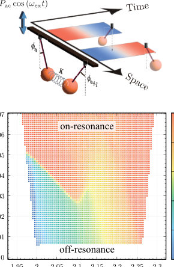
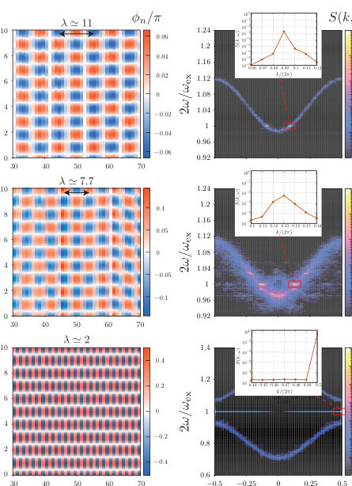
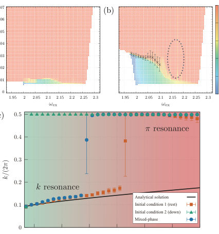
Summary. This paper explores how parametric driving creates complex spatiotemporal patterns in a nonlinear 1D lattice. It identifies a transition between different resonant states and explains how nonlinear effects and parametric amplification work together to select specific spatial wavenumbers.
Why it may be interesting. The study of pattern formation and stability in driven nonlinear lattices is highly relevant to understanding non-equilibrium phase transitions and collective dynamics in many-body systems, which are central themes in both classical and quantum many-body dynamics.
Main problem. Investigating the formation mechanisms and stability of spatiotemporal structures, specifically nontrivial k-resonance and pi-resonance states, in parametrically driven nonlinear many-body lattices.
Main result. The study finds that parametric driving induces spatiotemporal ordering with a subharmonic frequency, where the wavenumber k increases with driving strength before jumping discontinuously to pi-resonance. The k-resonance is driven by the interplay between parametric amplification and nonlinear collective fluctuations.
Method. Numerical simulations using the fourth-order Runge-Kutta method combined with analytical extended linear stability analysis and the method of multiple scales.
Model / system. A one-dimensional Frenkel-Kontorova (FK) model consisting of elastically-coupled classical oscillators with an on-site potential and periodic parametric driving.
Key observables. Fourier spectrum S(k, omega), spatiotemporal patterns of phase, wavenumber k, and oscillation amplitude.
Important parameters / regimes. Parametric driving strength (Pac), driving frequency (omega_ex), coupling constant (K), damping (gamma), and noise strength (T).
Assumptions / limitations. Small parameter epsilon for the method of multiple scales; single-mode approximation for the evolution of Fourier components; nonlinear approximation of the sine potential.
Figures summary. Fig 1 shows the schematic of pi-resonance and a phase diagram of wavenumber k; Fig 2 displays real-space spatiotemporal structures and Fourier spectra for different driving regimes.
Paper structure. The paper introduces the FK model and parametric driving, presents numerical results on wavenumber selection and phase transitions, provides an analytical derivation of the resonance mechanism via stability analysis, and concludes with an investigation of domain wall dynamics in the supplemental material.
We theoretically investigate the effects of parametric driving on the one-dimensional Frenkel-Kontorova model, a nonlinear many-body lattice system. It is numerically found that a parametric vibration induces spatiotemporal ordering characterized by the subharmonic frequency $ω_{\mathrm{ex}}/2$ and wavenumber $k$ which takes nontrivial values depending on the vibration strength $P_{\mathrm{ac}}$ and frequency $ω_{\mathrm{ex}}$. With increasing $P_{\mathrm{ac}}$, $k$ gradually increases and discontinuously jumps up to $k=π$. Based on an extended linear stability analysis, we show that the former $k$ resonance (the latter $π$ resonance) corresponds to the unstable (stable) mode and that the $k$ resonance is made possible by the interplay between the parametric amplification and the collective fluctuation developing through the nonlinear effect.
Authors: Gonzalo Camacho, Benedikt Fauseweh
Type: both · Category: statistical mechanics · PDF: https://arxiv.org/pdf/2605.27211v1
Analysis basis: full PDF text, analyzed in chunks
Topic relevance: 🔥 driven-dissipative phase transition 4/5 · 🔥 non-equilibrium dynamics 4/5 · 🔥 scars & prethermalization 4/5 · QC/QI experiment 3/5 · analog quantum simulation 3/5 · non-equilibrium universality 3/5 · Rydberg arrays 2/5 · entanglement & information structure 2/5 · exotic spin models in light-matter 2/5 · spintronics-quantum-optics interface 2/5
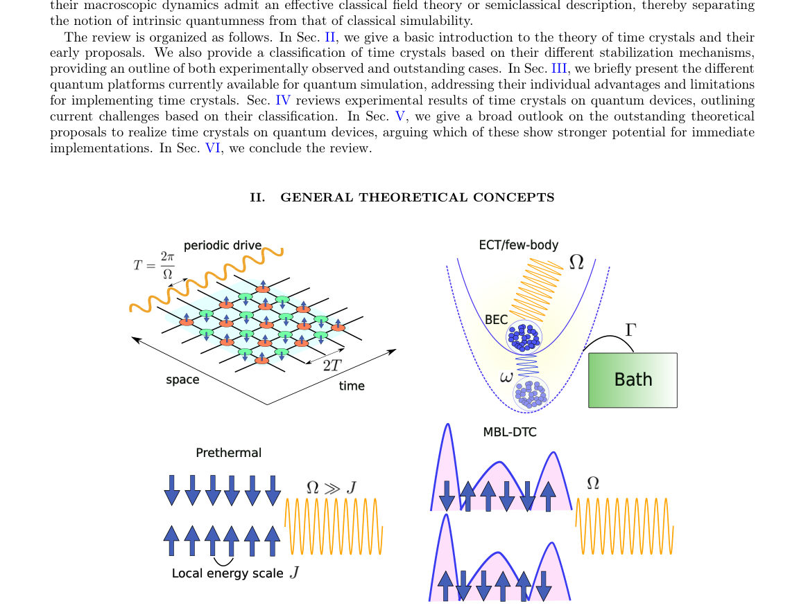
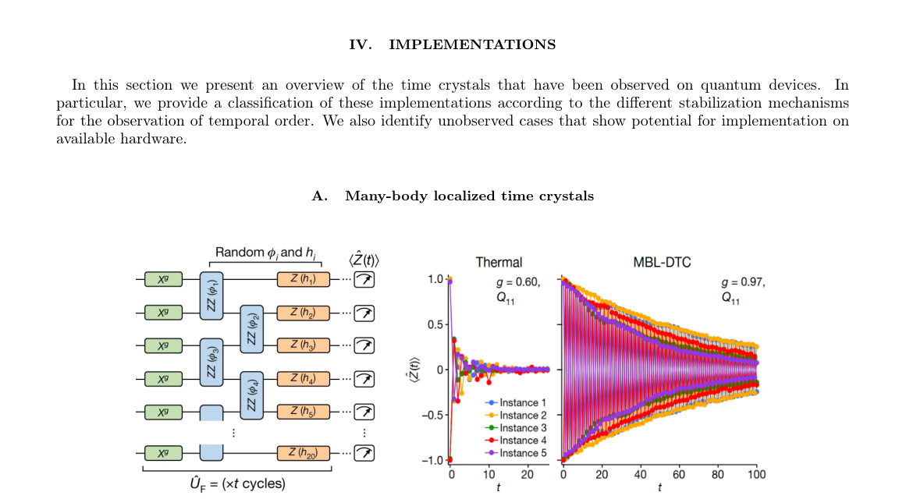
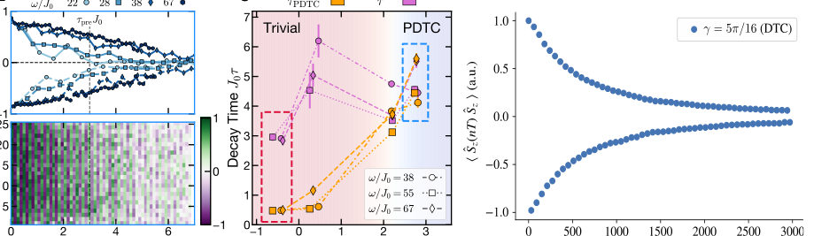
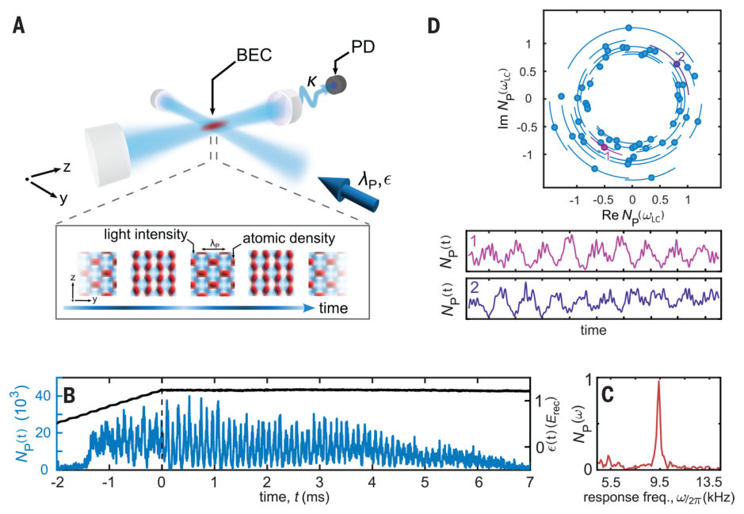
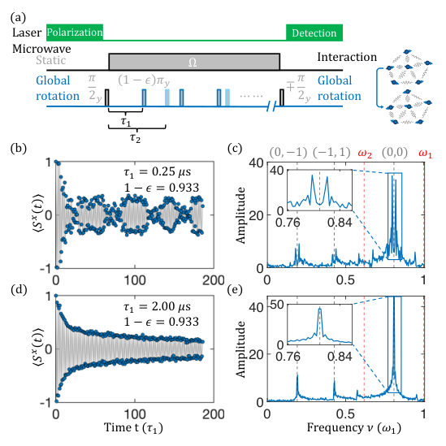
Summary. This review paper proposes a new classification framework for time crystals based on how they are stabilized and their physical properties. It surveys recent experimental progress across various quantum hardware platforms, such as superconducting processors and trapped ions, to identify new frontiers in non-equilibrium physics.
Why it may be interesting. It provides a unified perspective on non-equilibrium phase transitions and the competition between ergodicity-breaking mechanisms like localization and prethermalization in driven quantum systems.
Main problem. The need for an extended classification of time-crystalline phases based on their stabilization mechanisms and physical character, while distinguishing genuine quantum time crystals from classical simulations.
Main result. The authors propose a new classification framework for time crystals (discrete, continuous, closed, open, topological, etc.) and review recent experimental implementations on various quantum platforms.
Method. A review of recent experimental implementations combined with a proposed theoretical classification based on stabilization mechanisms (MBL, prethermalization, dissipation) and physical character.
Model / system. The review covers a wide range of platforms including superconducting qubits, trapped ions, neutral atoms, NV centers, and BECs, focusing on periodically driven (Floquet) many-body systems.
Key observables. Subharmonic response (period nT), temporal ordering, long-range order in the time dimension, and magnetization dynamics.
Important parameters / regimes. Drive period (T), drive frequency (Omega), energy scales (J), coupling to a bath (Gamma), and the thermodynamic limit.
Assumptions / limitations. The review focuses on platforms requiring quantum mechanical descriptions and entanglement, specifically excluding classical systems that are merely digitized simulations.
Figures summary. Figure 1 shows a schematic of discrete symmetry breaking and different stabilization mechanisms (Prethermal, MBL, BEC); Figure 2 illustrates a digital implementation of an MBL-DTC on a superconducting processor compared to a thermal phase.
Paper structure. The paper begins with the definition of spontaneous time translation symmetry breaking, moves to a classification of DTCs and CTCs, discusses various stabilization mechanisms (MBL, prethermal, dissipative), reviews specific experimental platforms, and concludes with open questions and future directions.
Time crystals are nonequilibrium phases of matter characterized by the emergence of temporal ordering, in which an interacting many-body system develops robust structure in its time evolution that is not trivially dictated by the external driving or environment. While related phenomena have long been studied in classical nonlinear systems, their realization in entangled quantum matter represents a distinct frontier. The theoretical understanding of discrete time crystals has substantially advanced, yet recent experiments using modern quantum devices and quantum processors reveal regimes beyond established paradigms. These developments call for an extended classification of time-crystalline phases according to both their stabilization mechanisms and their physical character, including discrete and continuous, closed and open, critical, topological, quasiperiodic, and controlled realizations. We review recent implementations of time crystals on quantum platforms and propose such a classification framework, identifying promising directions for the discovery of novel time-crystalline phases of matter.
Authors: Fumiya Hanamura, Sicheng Bao, Jie Lerk Yoo, Alexia Auffèves, Steven Touzard
Type: theory · Category: other · PDF: https://arxiv.org/pdf/2605.26783v1
Analysis basis: full PDF text, analyzed in chunks
Topic relevance: 🔥 Tavis-Cummings & cavity-many-emitter 4/5 · 🔥 correlated / nonlocal dissipation 4/5 · Dicke superradiance 3/5 · entanglement & information structure 3/5 · Keldysh / 2PI / non-Gaussian methods 2/5 · methods for driven-dissipative 2/5 · non-equilibrium dynamics 2/5
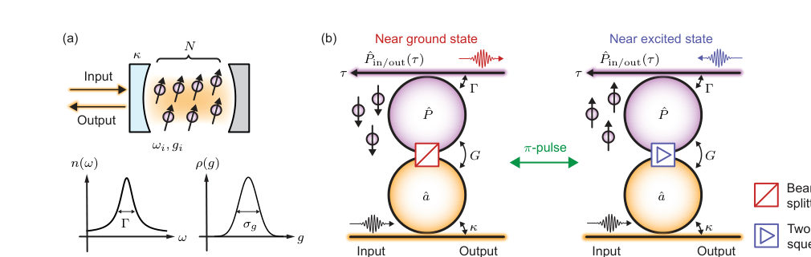
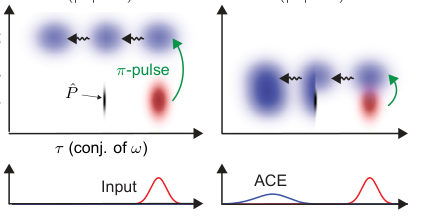
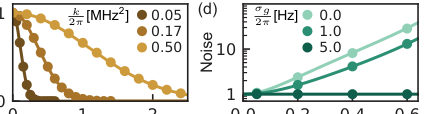
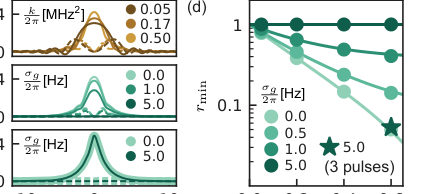
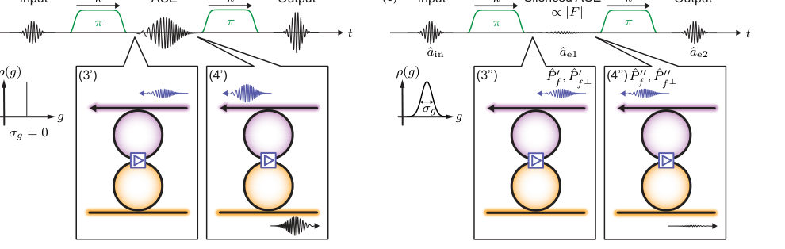
Summary. This paper introduces a waveguide model to show that variations in light-matter coupling strength can be harnessed to suppress unwanted noise in quantum memories. It identifies the physical origin of echo suppression during adiabatic pulses and proposes a new pulse sequence to maintain entanglement. The findings have direct implications for improving the performance of both microwave and optical quantum network protocols.
Why it may be interesting. It provides a novel perspective on treating disorder (coupling inhomogeneity) as a functional resource rather than a nuisance, which is highly relevant for designing robust quantum networks and high-fidelity quantum memories.
Main problem. The paper seeks to explain the unexpected suppression of echoes during Adiabatic Rapid Passage (ARP) pulses in quantum memories and to address the degradation of entanglement in RASE protocols caused by coupling inhomogeneity.
Main result. The authors demonstrate that coupling inhomogeneity can be used as a resource to suppress unwanted echoes (echo-silencing) and propose a new composite-pulse protocol to restore entanglement in the presence of such inhomogeneity.
Method. The study uses a waveguide model that maps subradiant modes to an effective waveguide, combined with second-order cumulant expansion simulations and the Holstein-Primakoff approximation.
Model / system. An ensemble of N two-level systems (spins) interacting with a single resonator mode, described by the Tavis-Cummings Hamiltonian with both frequency and coupling strength distributions.
Key observables. Superradiant emission, dephasing timescales, silencing factor (F), output noise, and the Duan-Simon criterion for entanglement.
Important parameters / regimes. Collective cooperativity (C), adiabaticity factor (Q), coupling distribution width (sigma_g), and frequency distribution width (Gamma).
Assumptions / limitations. The model relies on the Holstein-Primakoff approximation (valid for low excitation regimes) and assumes a second-order truncation of the cumulant expansion.
Figures summary. Figure 1 shows the physical system of spins in a resonator and the simplified waveguide model; Figure 3 illustrates the ROSE protocol, the suppression of ACE by coupling inhomogeneity, and the silencing factor versus coupling width.
Paper structure. The paper introduces the problem of inhomogeneity, develops a new analytical waveguide model, applies this model to explain echo suppression in ROSE/RASE protocols, proposes a mitigation strategy for entanglement, and validates the results against experimental platforms like microwave and optical systems.
Inhomogeneous ensembles of two-level systems are important for both fundamental light-matter physics and quantum-network applications. Here we develop a general waveguide model that provides an intuitive and analytical description of collective dynamics in such systems by mapping the subradiant modes to an effective waveguide with well-defined input-output relations. For echo-based quantum memories, the model reveals the physical origin of noisy-echo suppression by adiabatic pulses and shows that inhomogeneous light-matter coupling can be harnessed as a resource for noiseless storage. For entanglement generation, the same mechanism exposes a previously unexplored limitation of robust control pulses and leads to a new composite-pulse protocol that overcomes it. These results establish the waveguide model as a practical bridge between fundamental collective physics and quantum-network protocol design, with direct implications for high-fidelity memories and robust entanglement generation in inhomogeneous ensembles.
Authors: William T. Lam, Manoj K. Joshi, Daniel Stilck França, Benoît Vermersch
Type: theory · Category: quantum information and computing · PDF: https://arxiv.org/pdf/2605.26953v1
Analysis basis: full PDF text, analyzed in chunks
Topic relevance: 🔥 analog quantum simulation 4/5 · 🔥 methods for driven-dissipative 4/5 · correlated / nonlocal dissipation 3/5 · quantum measurements 3/5 · entanglement & information structure 2/5 · non-equilibrium dynamics 2/5
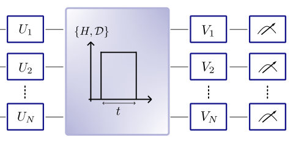
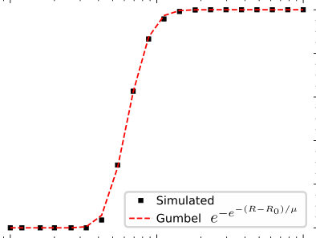
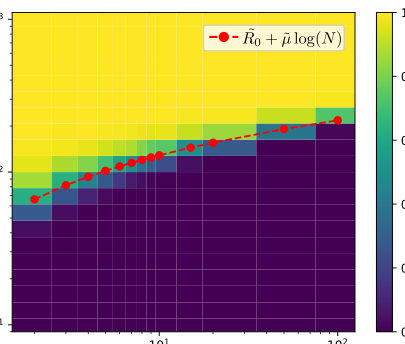
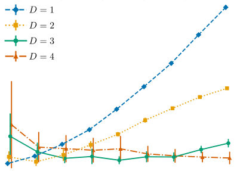
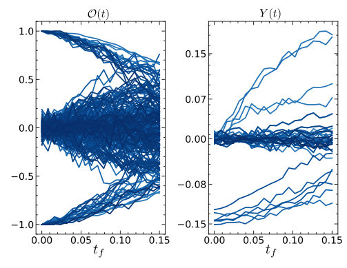
Summary. This paper presents a scalable method to reconstruct the Hamiltonian and dissipative components of a quantum system using randomized measurements. By focusing on pairwise interactions, the protocol avoids the exponential memory bottleneck typically associated with large-scale quantum system characterization. It also provides practical optimization guidelines to balance statistical and systematic errors during data processing.
Why it may be interesting. It provides a practical, scalable framework for characterizing open quantum systems, which is essential for verifying the dynamics of large-scale quantum simulators and understanding decoherence in many-body systems.
Main problem. Developing a scalable and efficient protocol for Liouvillian learning to reconstruct the full dynamics (Hamiltonian and noise) of large-scale quantum systems without exponential classical memory costs.
Main result. The authors demonstrate a pairwise learning protocol where the required classical memory is independent of system size and the number of random settings scales logarithmically with N, providing optimal guidelines for minimizing reconstruction error.
Method. The protocol uses randomized Pauli measurements and state preparation to extract local Liouvillian coefficients via polynomial interpolation of time-series data and least-squares solutions.
Model / system. The study focuses on Analog Quantum Simulators (AQS) such as trapped ions or superconducting circuits, specifically modeling an XY model with power-law interactions and single-body Lindblad noise.
Key observables. Expectation values of single-body and two-body Pauli operators and their time derivatives at t=0.
Important parameters / regimes. Number of random settings (R), number of measurement repetitions (Nm), interpolation degree (Dl), and system size (N).
Assumptions / limitations. The protocol assumes Markovian dynamics and a specific ansatz for the Liouplovian involving two-body interactions and single-body noise.
Figures summary. Figure 1 shows the experimental workflow; Figure 2 shows the full-rank probability of the configuration matrix; Figure 4 shows time dynamics of observables; Figure 5 illustrates the bias-variance tradeoff in interpolation; Figure 6 shows reconstruction error saturation with system size.
Paper structure. The paper introduces the Liouvillian learning problem, details the pairwise randomized measurement protocol, provides a mathematical framework for extracting coefficients, analyzes the scalability and error trade-offs, and validates the method with numerical simulations of an XY model.
We review and numerically study a protocol for Liouvillian learning based on randomized Pauli states and measurements. In particular, in the two-body, long-range interactions, and single-body noise setting, we describe the complete workflow to obtain the coefficients of the Liouvillian in an efficient and pairwise manner, meaning that the required classical memory is independent of the system size. We also provide guidelines for choosing the parameters for data acquisition and postprocessing that minimize the total reconstruction error.
Authors: Julian Boesl, Frank Pollmann, Michael Knap
Type: theory · Category: numerical methods · PDF: https://arxiv.org/pdf/2605.26219v1
Analysis basis: full PDF text, analyzed in chunks
Topic relevance: 🔥 entanglement & information structure 4/5 · 🔥 non-equilibrium universality 4/5 · driven-dissipative phase transition 3/5 · methods for driven-dissipative 3/5 · non-equilibrium dynamics 3/5
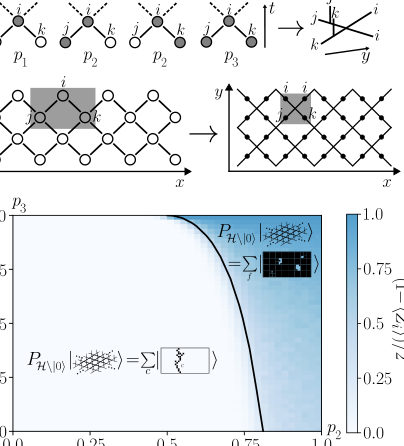
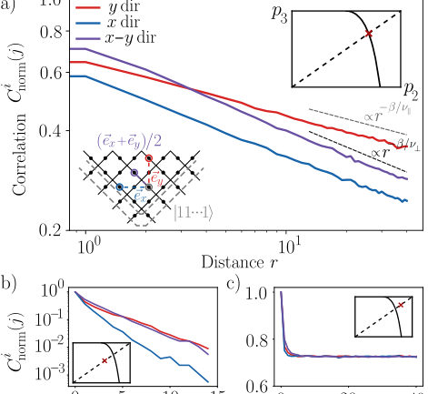
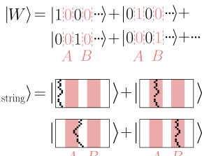
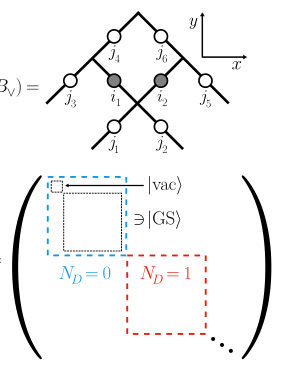
Summary. The paper establishes a connection between classical directed percolation and quantum entanglement transitions. It shows that the absorbing phase transition of a stochastic automaton manifests as a transition between W-state-like entanglement and trivial entanglement in a corresponding tensor network state.
Why it may be interesting. This work is highly relevant for many-body dynamics and open quantum systems as it provides a blueprint for using classical non-equilibrium universality classes to discover and characterize new, non-trivial entanglement structures in quantum states.
Main problem. Investigating transitions between quantum states with distinct entanglement patterns that do not represent stable equilibrium phases of matter, specifically by mapping classical non-equilibrium phase transitions to quantum tensor networks.
Main result. The authors demonstrate that the directed percolation (DP) transition in a classical automaton corresponds to a quantum entanglement transition between a W-state-like pattern (long-range pairwise entanglement) and a trivial, short-range entangled pattern.
Method. The study uses an 'automaton-to-isoTNS' mapping to translate stochastic cellular automata (Domany-Kinulence) into isometric Tensor Network States, utilizing transfer matrix analysis and negativity to quantify entanglement.
Model / system. A 2D quantum state constructed from the (1+1)D Domany-Kinzel automaton, featuring a continuous, frustration-free parent Hamiltonian with a degenerate ground state manifold consisting of a vacuum state and a non-trivial state.
Key observables. Negativity (as a measure of bipartite entanglement), Z-operator expectation values, density of active sites, and normalized correlation functions.
Important parameters / regimes. Transition probabilities (p1, p2, p3) of the DK automaton, specifically the p1=0 plane, and the critical point p_c approx 0.7055.
Assumptions / limitations. The tensor network is not injective, meaning the constructed state might not be the unique ground state of the parent Hamiltonian; the derivation of scaling laws assumes translational invariance.
Figures summary. Figure 1 shows the mapping from the DK automaton to the quantum state and the phase diagram; Figure 4 illustrates the structure of the parent Hamiltonian and the projection of qubits.
Paper structure. The paper introduces the mapping between stochastic automata and isoTNS, analyzes the entanglement transition in the absorbing phase of the DK model, compares the results to the Kasteleyn model to highlight the role of symmetry, and extends the findings to 3D directed percolation.
Changes in the entanglement structure and critical phenomena are hallmarks of quantum phase transitions. Here, we discuss how they appear in transitions between classes of states with distinct entanglement patterns beyond the paradigm of stable equilibrium phases of matter. Using a mapping between stochastic automata and isometric Tensor Network States (isoTNS), we construct a two-dimensional quantum state from the Domany-Kinzel automaton, which is a (1+1)D process with an absorbing phase transition in the directed percolation class. At the critical point of the automaton, the corresponding isoTNS hosts algebraic correlations in all spatial directions. The continuous parent Hamiltonian of this state has a degenerate ground state manifold. It consists of a product state (the absorbing state) and a second state that undergoes a transition from pairwise entanglement between distant regions, similarly to the W state, to a state with trivial entanglement. Our results demonstrate how the correspondence between isoTNS and classical stochastic evolution can be used to probe the Hilbert space structure beyond stable ground state manifolds.
Authors: Roland C. Farrell, Yongtao Zhan, Lucas Katschke, Lode Pollet, Ilan T. Rosen, Jad C. Halimeh
Type: both · Category: quantum information and computing · PDF: https://arxiv.org/pdf/2605.26245v1
Analysis basis: full PDF text, analyzed in chunks
Topic relevance: 🔥 QC/QI experiment 4/5 · correlated / nonlocal dissipation 3/5 · methods for driven-dissipative 3/5 · non-equilibrium dynamics 3/5 · driven-dissipative phase transition 2/5 · quantum measurements 2/5
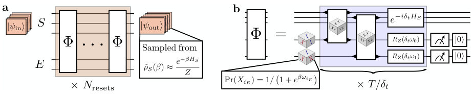
Summary. The researchers developed a method to prepare thermal states of frustrated kagome spin systems using dissipative quantum computing on IBM hardware. They found that the time needed to reach equilibrium does not depend on the number of spins, suggesting a potential quantum advantage over classical methods. The study also quantifies how hardware noise and reset errors affect the accuracy of the prepared thermal states.
Why it may be interesting. This work is highly relevant for researchers in open quantum systems and many-body dynamics as it demonstrates a practical method for using engineered dissipation and mid-circuit measurements to drive a system toward a target many-body steady state.
Main problem. The difficulty of preparing thermal (Gibbs) states of frustrated quantum spin systems on digital quantum computers due to the sign problem in classical Monte Carlo methods and the impact of hardware noise.
Main result. Demonstrated a robust dissipative protocol on IBM quantum processors that prepares approximate thermal states of the kagome Ising model, showing that the required circuit depth scales at most linearly with inverse temperature and is independent of system size.
Method. A dissipative quantum Gibbs sampling protocol using engineered environment qubits, mid-circuit resets, and a quantum channel designed to satisfy approximate quantum detailed balance, supplemented by Zero-Noise Extrapolation (ZNE) for error mitigation.
Model / system. Frustrated spin systems on a kagome lattice, specifically the Antiferromagnetic Heisenberg Model (AFHM) and the Antiferromagnetic Ising Model (AFIM), implemented on IBM's heavy-hex superconducting quantum processors.
Key observables. Energy density, local magnetization, antiferromagnetic correlations, and triangle ZZ correlators.
Important parameters / regimes. Inverse temperature (beta), system size (Ns), number of environment qubits (Ne), and coupling strength (alpha).
Assumptions / limitations. The efficiency of the protocol assumes that the mixing time scaling observed in small-scale classical simulations persists to larger system sizes.
Figures summary. Figure 1 illustrates the dissipative algorithm and reset process; Figure 2 shows the low-energy spectrum, mixing time scaling, and convergence analysis; Figure 3 shows the kagome lattice mapping onto IBM hardware and circuit diagrams; Figure 4 compares experimental energy density to noiseless and QMC results; Figure 13 shows reset error confusion matrices and spatial maps of effective temperature; Figure 14 shows energy density evolution with error mitigation; Figure 20 displays spatially resolved magnetization and correlators.
Paper structure. The paper introduces the problem of thermal state preparation, describes the dissipative sampling protocol and its implementation on IBM hardware, presents scaling and convergence results from classical simulations, details the experimental implementation and error mitigation strategies, and concludes with a comparison of experimental observables against QMC benchmarks.
Finite-temperature properties of strongly correlated quantum matter are central to condensed matter, chemistry, and high-energy physics, yet are often inaccessible to classical methods such as quantum Monte Carlo (QMC). Here, we investigate dissipative thermal state preparation of frustrated spin systems using digital quantum computers. We focus on two paradigmatic models on the kagome lattice: the antiferromagnetic Heisenberg model (AFHM), whose finite-temperature properties are inaccessible to QMC due to a severe sign problem, and the antiferromagnetic Ising model (AFIM), which serves as a sign-problem-free benchmark. Using IBM quantum processors, we prepare approximate thermal states of the AFIM on kagome lattices with up to $79$ spins coupled to $60$ environment qubits. We observe the emergence of a robust steady state with an adjustable effective temperature that persists in circuits with over 1000 layers of two-qubit gates. We further study the scalability of the dissipative protocol through classical statevector simulations of the AFIM and AFHM. On lattices with up to 24 sites, we find that the circuit depth to reach thermal equilibrium is independent of system size and grows at most linearly with inverse temperature. These results establish engineered dissipation as a promising approach to finite-temperature quantum simulation of frustrated matter, and point toward regimes where quantum devices may outperform classical methods.
Authors: Yuan Jiang, Wen-Long You, Liangsheng Li, Maoxin Liu
Type: theory · Category: other · PDF: https://arxiv.org/pdf/2605.27166v1
Analysis basis: full PDF text, analyzed in chunks
Topic relevance: 🔥 Rydberg arrays 4/5 · 🔥 entanglement & information structure 4/5 · analog quantum simulation 3/5 · exotic spin models in light-matter 3/5 · scars & prethermalization 3/5
Summary. This paper investigates the phase transitions of a 1D Rydberg spin chain subject to a blockade constraint. It identifies a Luttinger liquid, an antiferromagnetic phase, and a paramagnetic phase, and highlights a unique line in parameter space where the many-body ground state becomes a simple product state.
Why it may be interesting. It provides an analytically tractable, zero-entanglement reference point (the factorization line) for programmable Rydberg quantum simulators and explores the interplay between local and nonlocal quantum fluctuations in constrained Hilbert spaces.
Main problem. Characterizing the zero-temperature phase diagram and quantum criticality of a 1D constrained Rydberg spin chain where local Rabi driving and nonlocal dipolar exchange compete.
Main result. The study establishes a phase diagram containing a Luttinger liquid, an antiferromagnetic phase, and a polarized paramagnet, while discovering an exact ground-state factorization line within the AFM phase.
Method. The authors use a combination of Exact Diagonalization (ED), Density Matrix Renormalization Group (DMRG), and Variational Uniform Matrix Product State (vMPS) calculations, alongside Schrieffer-Wolff transformations.
Model / system. A 1D constrained quantum spin chain realized in Rydberg-atom arrays, featuring a blockade constraint that prevents adjacent excitations and includes competing transverse driving and longitudinal detuning.
Key observables. Entanglement entropy, entanglement-based diagnostics, finite-entanglement scaling, fidelity susceptibility, and density-density correlation functions.
Important parameters / regimes. Rabi driving strength (lambda), effective detuning (h), and the Rydberg blockade constraint.
Assumptions / limitations. The long-range van der Waals interactions are truncated to nearest-neighbor terms, and the system is studied in the strong-blockade limit.
Figures summary. Fig 1 shows the energy level scheme and interaction representations; Fig 2 presents the phase diagram with entanglement entropy; Fig 3/4 shows scaling analysis; Fig 5 maps nearest-neighbor concurrence and the factorization line.
Paper structure. The paper introduces the Rydberg-atom-based model, derives an effective Hamiltonian via Schriefer-Wolff transformation, presents the numerical phase diagram, analyzes the two distinct transition mechanisms, and concludes with the derivation of the exact factorization line.
We investigate the zero-temperature phase diagram of a one-dimensional constrained quantum spin chain realized in coherently driven Rydberg-atom arrays with competing local Rabi driving and dipole-dipole exchange interactions. Projecting onto the blockade-constrained Hilbert space yields an effective model in which local and nonlocal quantum fluctuations compete on equal footing. Combining exact diagonalization, the density-matrix renormalization group, and variational uniform matrix-product-state calculations, we establish a complete phase diagram comprising a Luttinger liquid, an antiferromagnetic ordered phase, and a polarized paramagnet. We identify two distinct mechanisms for the destruction of antiferromagnetic order: a conventional Ising transition at strong driving and a continuous quantum melting into the Luttinger liquid at weak driving, characterized using entanglement-based diagnostics and finite-entanglement scaling. In addition, we uncover an exact ground-state factorization line embedded within the ordered phase, providing an analytically tractable zero-entanglement reference point for experiments with programmable Rydberg quantum simulators.
Authors: Spiro Gicev, Ben Harper, Haiyue Kang, Muhammad Usman, Martin Sevior
Type: both · Category: quantum information and computing · PDF: https://arxiv.org/pdf/2605.26528v1
Analysis basis: full PDF text, analyzed in chunks
Topic relevance: 🔥 QC/QI experiment 4/5 · correlated / nonlocal dissipation 3/5 · Rydberg arrays 2/5 · quantum optics experiment 2/5 · spintronics-quantum-optics interface 2/5 · entanglement & information structure 1/5 · quantum measurements 1/5
Summary. This review article provides a comprehensive overview of crosstalk phenomena across all major quantum computing platforms. It identifies the physical origins of unintended interactions, evaluates current mitigation strategies, and highlights the emerging security risks associated with crosstalk in shared quantum environments.
Why it may be interesting. It is highly relevant for researchers in open quantum systems and quantum optics as it details how environmental and control-induced interactions (like ZZ coupling or photon spillover) lead to correlated noise and decoherence in multi-qubit registers.
Main problem. Crosstalk in quantum devices causes unintended interactions and lack of individual addressability, acting as a major barrier to scaling quantum computing platforms.
Main result. The paper provides a comprehensive review of crosstalk mechanisms, mitigation strategies, and security vulnerabilities across diverse quantum platforms, noting that structured noise becomes dominant as hardware improves.
Method. The authors perform a comparative review of literature across multiple physical architectures, categorizing crosstalk by physical origin, diagnostic methods, and mitigation techniques.
Model / system. The review covers a wide range of platforms including superconducting circuits, trapped ions, neutral atom arrays, photonic systems, semiconductor quantum dots, and NV centers in diamond.
Key observables. Gate fidelities, coherence times, error rates, Rabi ratios, correlated errors, and Pauli channel parameters.
Important parameters / regimes. Qubit number, gate times, frequency detuning, interatomic spacing, and photon loss.
Assumptions / limitations. The review assumes that crosstalk is a primary limiting factor for the transition from NISQ-era devices to large-scale, fault-tolerant quantum computers.
Figures summary. Figure 1 provides a visual catalog of various quantum computing platforms and companies; Figure 2 illustrates specific crosstalk examples such as optical pulse spillover, thermal heating in photonics, and frequency crowding.
Paper structure. The paper defines the problem of crosstalk and its impact on scaling, provides a platform-by-platform review of physical origins, surveys mitigation techniques, discusses emerging security vulnerabilities, and identifies open research questions.
Crosstalk noise derives from phenomena in quantum devices which inhibit individual addressability or cause unintended interactions among qubits. It is widely considered one of the major problems to be solved for a quantum computing platform to operate at scales beyond one or two qubits. Despite this, detailed discussion of crosstalk is often neglected when quantum device performance is described both in the context of device benchmarking and individual algorithm execution. Additionally, while the potential for crosstalk exists in all quantum platforms, the mechanisms and severity of crosstalk between platforms varies significantly, increasing the barrier of entry associated with understanding and performing research on unfamiliar quantum platforms. While previous work focused on theoretical formalism or platform specific details, in this review article, we provide a comprehensive overview of crosstalk from quantum computing literature across a range of physical systems focusing on physical origins, methods of mitigation and known consequential security vulnerabilities. We describe multiple crosstalk mechanisms for all major quantum computing platforms, which are usually implicitly addressed through device design, tuning, and mitigation techniques. We also observe accelerating research regarding security implications, however with multiple avenues for further exploration, especially for non-superconducting systems. Together, this review provides a comprehensive entry point for researchers and industry engineers interested in understanding and addressing the challenges arising from crosstalk phenomena in modern quantum computing systems.
Authors: Gian Paolo Beretta, Rohit Kishan Ray, Michael R. von Spakovsky
Type: theory · Category: statistical mechanics · PDF: https://arxiv.org/pdf/2605.26644v1
Analysis basis: full PDF text, analyzed in chunks
Topic relevance: 🔥 methods for driven-dissipative 4/5 · 🔥 non-equilibrium dynamics 4/5 · driven-dissipative phase transition 2/5 · non-equilibrium universality 2/5 · scars & prethermalization 2/5 · entanglement & information structure 1/5
Summary. This paper provides a rigorous mathematical foundation for hypoequilibrium states within the SEAQT framework of quantum thermodynamics. It proves that these states form an invariant manifold, meaning a mixture of canonical states remains such a mixture during evolution. The work also bridges the gap between SEAQT and the RCCE method for modeling complex relaxation processes.
Why it may be interesting. This work is highly relevant for researchers in open quantum systems and many-body dynamics as it provides a rigorous foundation for reduced-order modeling of far-from-equilibrium relaxation and transport processes using a thermodynamically consistent framework.
Main problem. The paper seeks to establish a mathematically rigorous framework for 'hypoequilibrium' (HE) states within the Steepest-Entropy-Ascent Quantum Thermodynamics (SEAQT) framework and to prove the dynamical consistency of these states.
Main result. The authors prove that the M-th order HE family constitutes an invariant manifold under SEAQT evolution, ensuring that states representing a mixture of canonicals maintain this structure. They also establish a formal connection between the HE ansatz and the Rate-Controlled Constrained-Equilibrium (RCCE) method.
Method. The study uses operator-based mathematical formulations, Hilbert space decomposition into spectral sectors, and variational principles to derive reduced-order evolution equations for intensive parameters.
Model / system. The model focuses on unstructured quantum systems governed by the SEAQT equation of motion, which augments the von Neumann equation with a nonlinear dissipative term. It also extends to non-Hamiltonian (NH-SEAQT) interactions for system-bath energy and entropy exchange.
Key observables. Entropy production rate, sector-specific temperatures (inverse temperatures), chemical potentials, sector probabilities, and the Massieu operator.
Important parameters / regimes. Spectral-sector temperatures (beta_K), sector probabilities (p_K), relaxation times (tau_K), and the regime where dissipative dynamics commute with the Hamiltonian.
Assumptions / limitations. The primary approximation is the Hypoequilibrium (HE) assumption, which assumes rapid probability redistribution within energy sectors (HESS) and a decomposition of the Hilbert space into coarse-grained spectral sectors.
Figures summary. Figure 1 illustrates the rapid relaxation of a HESS state toward a maximal-entropy state on an energy-vs-entropy diagram and shows the overall system evolution.
Paper structure. The paper begins with the formal definition of HE states, moves to the derivation of reduced evolution for intensive parameters, provides a proof of manifold invariance, establishes the link to the RCCE method, and concludes with an extension to non-Hamiltonian system-bath interactions.
A formal development of the hypoequilibrium (HE) state concept within the Steepest-Entropy-Ascent Quantum Thermodynamics (SEAQT) framework is presented, emphasizing its rigorous mathematical formulation. Using a general decomposition of the Hilbert space, HE states are defined in operator language and the reduced evolution of the associated intensive parameters for the regime where the dissipative dynamics commutes with the Hamiltonian is derived. It is proved that the $M$-th order HE family (where $M$ is the number of spectral sectors) constitutes an invariant manifold under the SEAQT equation of motion, ensuring that states initially representing a ``mixture of canonicals'' maintain this structure throughout their evolution. Furthermore, a formal connection is established between the HE ansatz and the rate-controlled constrained equilibrium (RCCE) method, identifying HE variables as constraint potentials. Finally, the model is extended to non-Hamiltonian SEAQT (NH-SEAQT) interactions to describe thermodynamically consistent energy and entropy exchanges between subsystems and heat baths. This work provides the formal foundation for reduced-order modeling of far-from-equilibrium relaxation and transport processes, and supports a methodology previously applied across various physical and chemical systems.
Authors: Mahasweta Pandit, Sheikh Parvez Mandal, Mark T. Mitchison, Javier Prior
Type: theory · Category: numerical methods · PDF: https://arxiv.org/pdf/2605.27326v1
Analysis basis: full PDF text, analyzed in chunks
Topic relevance: 🔥 Kondo & dissipative impurity 4/5 · 🔥 methods for driven-dissipative 4/5 · driven-dissipative phase transition 3/5 · non-equilibrium dynamics 3/5
Summary. This paper introduces a tensor-network method to simulate autonomous oscillations in quantum electromechanical systems. It overcomes the computational challenges of large bosonic spaces and structured environments to accurately describe the transition to limit-cycle dynamics. The work reveals how electromechanical backaction and environmental parameters govern the stability of self-sustained motion.
Why it may be interesting. It provides a powerful, unified numerical tool for studying non-equilibrium steady states in open quantum systems, bridging the gap between adiabatic and non-adiabatic regimes in strongly coupled electron-phonon systems.
Main problem. Developing an exact numerical description for self-sustained oscillations in nanoelectromechanical systems (NEMS) where large bosonic Hilbert spaces, strong electron-phonon coupling, and structured fermionic leads coexist.
Main result. The authors present a unified tensor-network framework that successfully captures the emergence of mechanical limit cycles and identifies that a peak in vibrational fluctuations precedes the onset of self-sustained oscillations.
Method. A steady-state tensor-network framework using binary encoding for phonons, mesoscopic reservoir embedding for non-Markovian leads, and a variational DMRG solver in Liouville space.
Model / system. An Anderson-Holstein impurity model consisting of a single-level quantum dot coupled to a quantized vibrational mode, connected to two fermionic leads and a weak bosonic damping bath.
Key observables. Torotropy (phase-space structure), Husimi Q-function, phonon-number Fano factor, second-order coherence g(2)(0), and particle current.
Important parameters / regimes. Electromechanical coupling strength (lambda), adiabaticity parameter (gamma = Gamma/omega_0), lead bandwidth (delta), temperature (T), and phonon damping (Gamma_ph).
Assumptions / limitations. The phonon Hilbert space is truncated to a finite Fock basis, and the fermionic reservoirs are approximated using a sum of Lorentzian spectral densities via auxiliary modes.
Figures summary. Figure 1 shows the NEMS setup; Figure 3 illustrates the binary encoding and reservoir embedding; Figure 4 depicts the Liouville-space vectorization; Figure 10 and 11 show convergence tests and benchmarks against semiclassical results.
Paper structure. The paper introduces the NEMS problem, details the tensor-network construction (binary encoding and reservoir embedding), describes the variational Liouville-space solver, presents results on the emergence of self-oscillations and phase-space dynamics, and concludes with convergence and benchmark analyses.
Transport-induced self-sustained oscillations in electromechanical systems convert a static electrochemical bias into robust, autonomous oscillatory motion in the absence of any external periodic drive. However, an exact description of such self-oscillations remains challenging in nanoscale electromechanical devices featuring a simultaneously large bosonic Hilbert space, strong interactions, and structured fermionic leads. We formulate a tensor-network framework that combines a binary representation of the vibrational mode with mesoscopic reservoir embeddings that enable controlled access to the self-oscillatory steady states and relevant transport observables without explicit real-time propagation. We demonstrate the emergence of mechanical self-oscillations across a broad set of operating conditions, in which strong electromechanical backaction, nonadiabatic oscillator dynamics, and energy-dependent electronic tunneling processes compete. Furthermore, we observe that for both slow and fast vibrating mechanical modes, suppressed vibrational occupation fluctuations in the self-oscillation window along the electromechanical coupling strength sweep is preceded by a peak in the occupation fluctuations. Collectively, we explore how both intrinsic system properties and environmental parameters govern such autonomous oscillations over a broad range of operating conditions. The generality of our framework will enable the method to be employed straightforwardly to more complicated or experimentally relevant scenarios.
Authors: Graciana Puentes
Type: theory · Category: disordered systems and neural networks · PDF: https://arxiv.org/pdf/2605.27300v1
Analysis basis: full PDF text, analyzed in chunks
Topic relevance: 🔥 measurement-induced transitions 4/5 · 🔥 quantum measurements 4/5 · driven-dissipative phase transition 3/5 · methods for driven-dissipative 3/5
Summary. The study uses dynamic neural networks to investigate topological phase transitions in a weak-measurement-driven quantum system. It finds that an NARX architecture can predict critical phase transitions with near-numerical precision, proving that different topological sectors are linked by a deterministic relationship.
Why it may be interesting. It demonstrates how machine learning architectures can be used as high-precision numerical probes to uncover hidden deterministic laws and analytical identities in complex quantum phase transitions.
Main problem. Determining whether the topological phase transitions in a weak-measurement-induced geometric phase system are governed by a deterministic law linking different winding numbers.
Main result. The NARX neural network architecture achieves near-perfect predictive fidelity (MSE of 10^-27), suggesting a mathematically deterministic functional identity between winding numbers and the critical measurement strength.
Method. A comparative analysis of three dynamic neural network architectures (NARX, NAR, and NIO) used as numerical probes to map the relationship between topological sectors.
Model / system. A quantum system in an equatorial state subjected to a sequence of weak measurements, where the measurement-strength parameter modulates the angular velocity of the state vector on the Bloch sphere.
Key observables. Geometric phase (order parameter), winding number (topological invariant), and critical measurement strength (c_crit).
Important parameters / regimes. Winding numbers (W), measurement-strength parameter (c), and temporal embedding delay (d).
Assumptions / limitations. The system operates in the quasi-continuous measurement limit (N approaches infinity) and trajectories are constrained to the equator of the Bloch sphere.
Figures summary. Figure 1 shows the three NN architectures; Figure 2 plots geometric phase jumps; Figures 6-8 display error autocorrelation functions for the different models.
Paper structure. The paper introduces the physical system and measurement framework, defines the three neural network architectures, presents a comparative performance analysis using MSE and autocorrelation, and concludes with the implications of the deterministic mapping and the complexity paradox.
We report a comparative analysis of three dynamic neural network (NN) architectures -- NAR, NARX, and NIO -- to evaluate their efficiency in estimating the critical-measurement-strength parameter ($c_{crit}$) characterizing topological phase transitions in geometric phases induced by weak measurements. Our results demonstrate that the NARX architecture achieves superior predictive fidelity, reaching a Mean Squared Error (MSE) of $10^{-27}$ -- the limit of numerical precision -- at an optimal delay of $d=1$. This exceptional performance implies the identification of a perfect functional identity, suggesting that the relationship between winding numbers $W$ and $c_{crit}$ is mathematically deterministic. We observe a "complexity paradox" where the NARX model's accuracy collapses at higher delays ($d=4$), a phase-sensitivity that confirms the model captures a high-precision dynamic mapping rather than a trivial pattern. While the NAR model remains robust for local-trend capture, the NIO architecture fails to accurately resolve the phase transition despite increased neuronal capacity. These findings underscore that both autoregressive feedback and immediate exogenous context are essential for the exact characterization of topological phases, establishing NARX as a robust framework for deriving governing laws in complex quantum systems, where analytical solutions remain elusive.
Authors: Francisco Pereira, Nandagopal Manoj, Sara Murciano
Type: theory · Category: statistical mechanics · PDF: https://arxiv.org/pdf/2605.26932v1
Analysis basis: full PDF text, analyzed in chunks
Topic relevance: 🔥 entanglement & information structure 4/5 · 🔥 non-equilibrium universality 4/5 · driven-dissipative phase transition 3/5 · non-equilibrium dynamics 3/5
Summary. This paper studies how long-range interactions applied through non-unitary evolution change the phase diagram of Gaussian states. It demonstrates that the range of the interaction (alpha) dictates whether the system undergoes smooth crossovers or immediate transitions to topological or critical phases. The study uses analytical tools to show that even very long-range interactions do not necessarily induce sharp phase transitions at finite deformation strength.
Why it may be interesting. It provides deep insights into how non-unitary dynamics and long-range interactions can bypass 1D constraints to induce phase transitions and change universality classes, which is highly relevant to many-body dynamics and non-equilibrium physics.
Main problem. Investigating how long-range deformations via non-unitary imaginary-time evolution affect the phase structure, entanglement scaling, and topological properties of Gaussian quantum states.
Main result. The decay exponent alpha of the long-range interactions determines the system's infrared behavior, identifying three regimes: smooth crossovers (alpha > 1), immediate topological transitions (alpha = 1), and instantaneous critical-like behavior (alpha < 1).
Method. Analytical approach using the Gaussian nature of the state, Bogoliubov transformations, Toeplitz matrix formalism (Fisher-Hartwig and Szego theorems), and complex contour integration.
Model / system. A 1D Majorana fermion chain (equivalent to the transverse field Ising model) undergoing non-unitary evolution generated by a quadratic Hamiltonian with power-law couplings (1/r^alpha).
Key observables. Entanglement entropy (Rényi and von Neumann), correlation functions (x-correlator, y-correlator, and string correlator), winding number, and effective central charge.
Important parameters / regimes. Decay exponent alpha, deformation strength beta, anisotropy gamma, magnetic field h, and chemical potential mu.
Assumptions / limitations. The system is assumed to be in a Gaussian/free-fermion state, and the analysis focuses on the odd-parity sector with periodic boundary conditions.
Figures summary. Figure 1 shows a phase diagram of transitions as a function of beta and alpha; Figure 2 illustrates contour integration sectors; Figure 3 shows analytical decay of effective central charge; Figure 4 shows entanglement scaling; Figure 13 shows the evolution of the correlator symbol in the complex plane.
Paper structure. The paper introduces the non-unitary deformation protocol, defines the long-range Hamiltonian models, develops the analytical framework for the correlation matrix and symbol, analyzes the three distinct regimes based on alpha, and discusses emergent symmetries and topological diagnostics.
Imaginary-time evolution by a local Hamiltonian cannot induce a phase transition in one dimension, but longer-range interactions may subvert such constraints. Starting from the ground state of the Kitaev Majorana chain, we modify the wave function by an imaginary-time evolution generated by a quadratic Hamiltonian with power-law couplings that enhance pairing correlations, typically of the form $1/r^α$, where $r$ is the distance between two sites. As the state remains Gaussian, entanglement and correlation functions can be computed analytically. We find that the decay exponent $α$ controls three distinct infrared regimes: for $α>1$, the deformation produces only smooth crossovers at finite deformation strength, while the topological regime is reached only asymptotically as the deformation strength tends to infinity. At $α=1$, the deformation induces an immediate flow to the topological phase: an infinitesimal deformation strength drives the system to a topological regime, and in a particular case, an emergent Kramers-Wannier symmetry enforces Ising-like scaling at long distances. For $α<1$, the deformed state shows the same critical-like behavior for all non-zero deformation strength. We observe that even with arbitrarily long-range interactions, these models do not display a sharp phase transition at non-zero deformation strength.
Authors: Marco Pezzutto, Anton Corr, Gabriele De Chiara, Salvatore Lorenzo, Stefano Gherardini
Type: theory · Category: statistical mechanics · PDF: https://arxiv.org/pdf/2605.26818v1
Analysis basis: full PDF text, analyzed in chunks
Topic relevance: 🔥 quantum measurements 4/5 · entanglement & information structure 3/5 · non-equilibrium dynamics 3/5 · correlated / nonlocal dissipation 2/5 · methods for driven-dissipative 2/5
Summary. This paper demonstrates that the non-classicality (non-positivity) of the energy-change Kirkwood-Dirac distribution serves as a robust witness for non-Markovian quantum dynamics. It shows that this witness is particularly effective when system-environment interactions preserve energy and remains valid even under anisotropic coupling.
Why it may be interesting. It provides a practical, measurement-efficient way to detect memory effects in open quantum systems using only local energy measurements, which is highly relevant for experimentalists in quantum optics and superconducting circuits.
Main problem. The paper aims to identify non-Markovian quantum dynamics in open systems using only energy measurements by investigating the non-positivity of the energy-change Kirkwood-Dirac quasiprobability distribution.
Main result. Violations of CP-divisibility are always witnessed by non-positive values in the energy-change Kirkwood-Dirac distribution, a link that is strongest in energy-preserving interaction regimes.
Method. The authors use a collision model framework, applying matrix-element representations of qubit maps and evaluating non-positivity functionals of the Kirkwood-Dirac distribution.
Model / system. A memory-mediated collision model consisting of a system (S), an auxiliary memory (M), and an environment (A), modeled as spin-1/2 particles interacting via Heisenberg-type exchange interactions.
Key observables. System energy changes (u_S), Kirkwood-Dirac quasiprobability distribution, quantum mutual information, and anomalous energy fluxes.
Important parameters / regimes. Coupling anisotropy (gamma), system-memory-environment frequencies, detuning (delta_omega), and collision number (n).
Assumptions / limitations. The system is initialized in a thermal state, and the dynamics are assumed to be phase-covariant (z-rotation symmetry) in certain parts of the analysis.
Figures summary. Figure 1 compares the non-positivity functional with non-CP-divisibility measures and energy conditions; Figure 4 shows the dependence of non-Markovianity measures (I_LFS, I_RHP) on the coupling anisotropy parameter gamma.
Paper structure. The paper introduces the problem of non-Markovianity detection, defines a collision model with Heisenberg interactions, develops the mathematical framework for phase-covariant maps and Kirkwood-Dirac distributions, analyzes the impact of anisotropy on the witness, and concludes with a comparison of different non-Markovianity measures.
We address the problem of identifying non-Markovian quantum time evolutions of an open quantum system by only performing measurements of the system's energy. We demonstrate that violations of CP-divisibility are always witnessed by non-positive values of the energy-change Kirkwood-Dirac quasiprobability distribution associated with the system's Hamiltonian, evaluated at consecutive times. The link between non CP-divisibility and non-positivity of the system's energy-change distribution is stronger when the system-environment interactions are energy-preserving. The witness works whenever anomalous energy fluxes, due to non-Markovianity, are realized. Anomalous fluxes are also detected by the non-Markovianity measure built over the quantum mutual information between the states of the open system and of a quantum correlated reference.
Authors: Parbati Senapati, Kalpataru Pradhan
Type: theory · Category: strongly correlated electrons · PDF: https://arxiv.org/pdf/2605.27181v1
Analysis basis: full PDF text, analyzed in chunks
Topic relevance: 🔥 non-equilibrium dynamics 4/5 · Keldysh / 2PI / non-Gaussian methods 3/5 · Kondo & dissipative impurity 2/5 · methods for driven-dissipative 2/5 · spintronics-quantum-optics interface 2/5
Summary. This study demonstrates that combining microwave-driven Floquet engineering with Fano interference in a ring-chord quantum dot structure can significantly boost thermoelectric efficiency and spin-dependent transport. By using geometry to suppress thermal conductance while using microwaves to tune energy-selective channels, the authors achieve remarkably high figures of merit. This provides a strategy for designing high-performance nanoscale heat engines and spin filters.
Why it may be interesting. The paper explores the dynamic control of quantum interference and energy-selective transport using periodic driving, which is highly relevant to the study of open quantum systems and Floquet engineering of many-body states.
Main problem. Investigating how the interplay between microwave-driven Floquet sidebands and geometry-driven Fano interference can be used to enhance the thermoelectric and spin-caloritronic performance of multi-quantum-dot nanostructures.
Main result. The ring-chord geometry under microwave driving achieves an exceptional thermoelectric figure of merit ZT approx 12 and a spin figure of merit ZsT approx 18, reaching nearly 62% of the Carnot efficiency.
Method. Nonequilibrium Green's function (NEGF) formalism combined with Floquet theory and a self-consistent Hartree treatment of electron-electron interactions.
Model / system. A four-quantum-dot nanostructure in two geometries (pure ring and ring-chord) coupled to ferromagnetic leads, featuring on-site Coulomb interaction, Zeeman splitting, and time-periodic microwave driving.
Key observables. Electrical conductance, thermopower (Seebeck coefficient), electronic thermal conductance, spin-dependent transport, thermoelectric figures of merit (ZT and ZsT), and efficiency at maximum power.
Important parameters / regimes. Microwave amplitude, frequency, temperature, dot-lead coupling strength, spin polarization, and Zeeman splitting.
Assumptions / limitations. Wide-band approximation for lead self-energies, linear response regime, and neglect of phonon heat transport.
Figures summary. Figure 1 shows the schematic of ring and ring-chord geometries; Figures 3-4 plot conductance, thermal conductance, and Seebeck coefficient vs. energy; Figures 5-8 show temperature and power-efficiency trade-off dependencies; Figures 9-12 illustrate spin-dependent conductance, thermopurity, and parameter space contour plots.
Paper structure. The paper introduces the system geometry, details the Floquet-NEGF theoretical framework, compares transport in pure ring vs. ring-chord geometries, analyzes the impact of microwave driving on thermoelectric efficiency, and concludes with a study of spin-caloritronic performance under magnetic fields.
We investigate photon-assisted thermoelectric transport in four--quantum-dot nanostructures featuring ring and ring--chord geometries coupled to ferromagnetic leads. Focusing on the interplay between microwave-induced Floquet sidebands and geometry-driven Fano interference, we employ the nonequilibrium Green's function formalism combined with Floquet theory and a self-consistent Hartree treatment of electron-electron interactions within the linear response regime. The inclusion of a longitudinal interdot chord bridging the lead-coupled dots introduces a discrete interference pathway that competes with the continuum of ring-mediated states, giving rise to pronounced Fano resonances. Microwave irradiation dynamically reshapes these resonances through photon absorption and emission processes, enabling tunable control of electrical conductance, thermopower, and electronic thermal conductance. Quantitatively, at an intermediate temperature of $T=0.3Γ_0$ (where $Γ_0$ denotes the dot-lead coupling strength), the microwave-driven ring-chord geometry exhibits an exceptional thermoelectric figure of merit of ZT $\approx$ 12 and an optimal efficiency--power trade-off, reaching nearly $62\%$ of the Carnot efficiency with an output power of $6.24~\mathrm{fW}$. Crucially, the combination of spin-polarized injection from the leads and Zeeman splitting within the dots induces a robust spin-dependence within this Floquet--Fano interference. This cooperative interplay results in an enhanced spin Seebeck response and a maximum spin thermoelectric figure of merit of nearly $Z_sT \approx 18$. Our findings establish microwave-driven engineering of Fano interference as an effective strategy for modulating spin-caloritronic behavior in multi-quantum-dot devices.